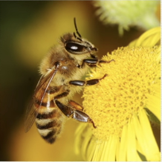

Is it a bee or a three?

My Fears
It’s scary although not surprising to think that everything we do is monitored and analyzed so that we are targeted better next time.
Interesting
I thought it was interesting how much trial and error it takes to get the algorithm right
Questions
Not right now.
Criticisms
No, I thought it was informative and entertaining
Three
Bee